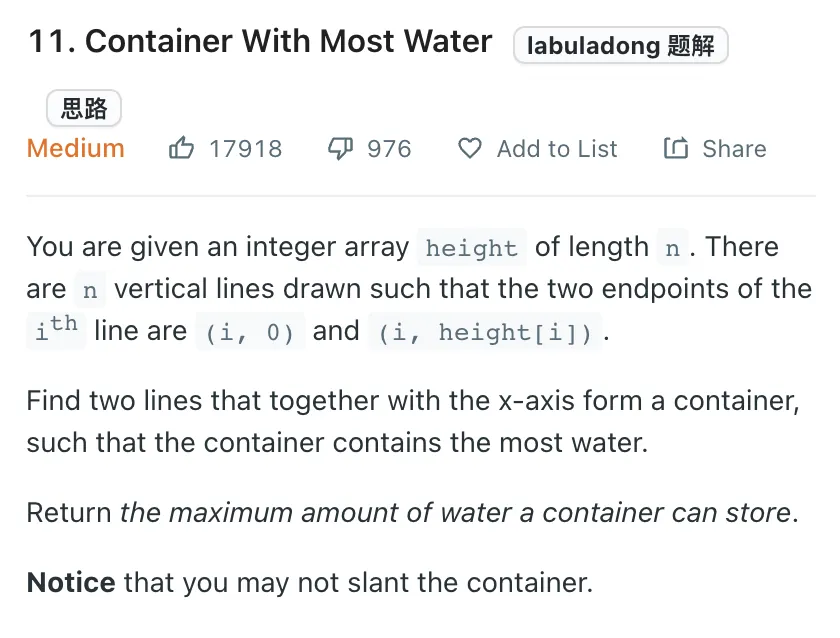
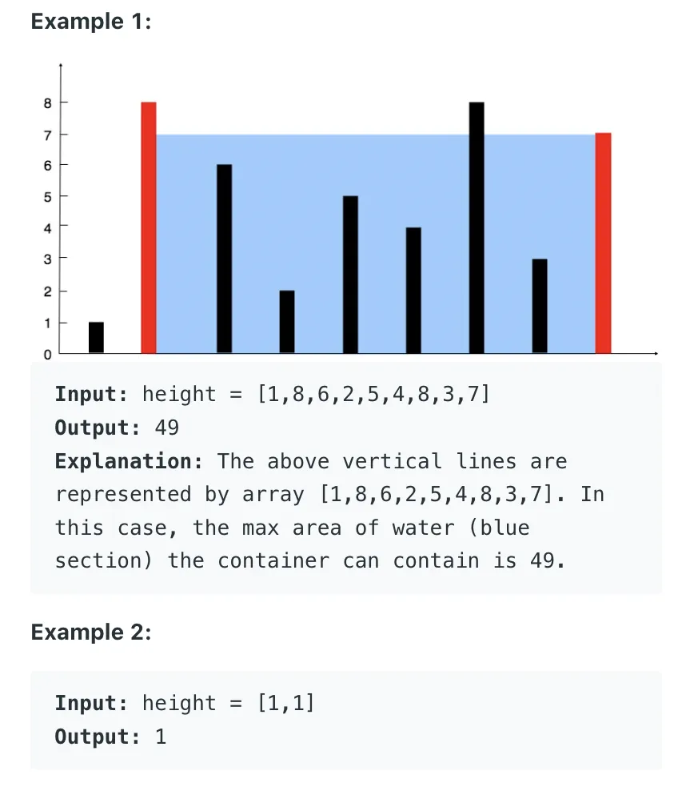

11. Container With Most Water
考過的公司：Asked by: Amazon, Bytedance, Google, tiktok
Question


✍🏽 My Solution
Runtime: 4 ms, faster than 81.21% of Java online submissions for Container With Most Water. Memory Usage: 74.7 MB, less than 52.51% of Java online submissions for Container With Most Water.
class Solution {
public int maxArea(int[] height) {
int n = height.length;
int left = 0;
int right = n - 1;
int res = 0;
while (left < right) {
int cur_area = Math.min(height[left], height[right])*(right - left);
if (cur_area > res) {
res = cur_area;
}
if (height[left] < height[right]) {
left++;
} else {
right--;
}
}
return res;
}
}
Runtime 47ms Beats 98.84%
func maxArea(height []int) int {
res := 0
l, r := 0, len(height)-1
for l < r {
area := min(height[l], height[r]) * (r - l)
if area > res {
res = area
}
if height[l] < height[r] {
l++
} else {
r--
}
}
return res
}
func min(a, b int) int {
if a < b {
return a
}
return b
}
🧠 Thought Process
- Why did I choose this particular implementation?
- 用
left和right两个指针从两端向中心收缩，一边收缩一边计算[left, right]之间的矩形面积，取最大的面积值即是答案。
- 用
- What is the time/space complexity of my solution? How do I know?
- time: O(n)
- space: O(1)
- What mistakes did I make?
- 有自己想出來計算面積的公式，但是沒有想到可以用雙指針的方式
- 也沒有想到雙指針的移動方式
Solution #1 [暴力解法]
Time Limit Exceeded
public int maxArea(int[] height) {
int max = 0;
for (int i = 0; i < height.length; i++) {
for (int j = i + 1; j < height.length; j++) {
int h = Math.min(height[i], height[j]);
if (h * (j - i) > max) {
max = h * (j - i);
}
}
}
return max;
}
class Solution {
public int maxArea(int[] height) {
int n = height.length;
int max = 0;
for (int i = 0; i < n; i++) {
for (int j = i+1; j < n; j++) {
int h = Math.min(height[i], height[j]);
max = Math.max(max, h*(j-i));
}
}
return max;
}
}
Explanation (in my words)
- How does their solution work?
- 直接遍历任意两根柱子，求出能存水的大小，用一个变量保存最大的。
- What is the space/time complexity of their solution?
- time: O(n^2)
- space: O(1)